Chapter 6 应用案例
SHUD作为通用的流域水文模型，可以快速部署与全球大部分流域，能为全球水文及相关研究提供快速可靠的模拟和预测，也可作为防灾减灾、农业估产、生态环境模拟等等方面提供可靠水文背景。 本章节通过全球6个流域展示SHUD模拟系统，向用户展示水文基础数据获取、模型构建、水文模拟、自动化校准、数据分析等研究流程。用户可通过实例了解模型的可靠性、可用性和效率，从初学者进阶为SHUD系统的开发者和合作者。
构建SHUD模型的建议 1. 检查数据格式和一致性，例如：空间数据投影是否和重叠区，气象数据的单位是否符合要求？时间序列数据值是否为时间平均值？模型运行是否有异常值提示？ 1. 使用“离线”模式运行（只运行模型的读取和写出，不实际计算），可以检查模型的输入输出是否正确。 1. 从“理想化”的驱动数据入手，（.cfg.para文件中FORC_debug=1）——启动简单驱动数据驱动模型，跳过可能的驱动数据错误。 1. 运行较短模拟时间，然后读取结果，并检验结果是否符合预期。 1. 如果以上过程都无误，即可带入全部数据运行模型。
6.1 V形流域
本案例源码和数据获取地址： Github: https://github.com/Model-Intercomparison-Datasets/V-Catchment
V形流域（V-Catchment， VC）是一个可验证数值水文模型的理想化模型；此流域不仅有效测试了模型的地表径流、汇流、河川径流和水量平衡，也可验证数值方法的质量守恒，甚至模型的网格划分的无关性（Independancy）和收敛性（Convergence）。
VC模拟空间有两个倾斜的坡面和链接坡面的倾斜河道组成。
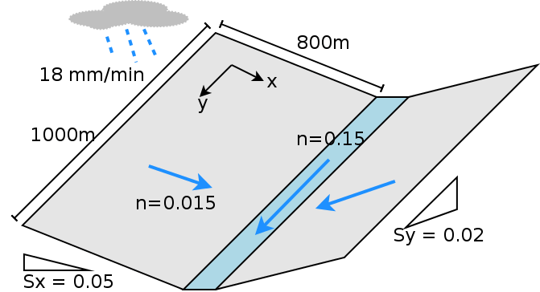
Description of the V-Catchmenet
两个坡面是\(800 \times 1000 m\)，并且曼宁系数\(n=0.015\)的斜面. 居于坡面之间的河道宽度\(20 m\)宽，\(1000 m\)长，曼宁系数为\(n=0.15\). 从坡面顶到河道的坡度为0.05（沿\(x\)轴方向），同时，从河道起点到重点的坡度为0.02，（沿\(y\)轴方向）。坡面与河流都是完全不透水表面，即无下渗，无植被。
整个VC接收连续、均一降水，降雨强度\(18 mm/hr\)并持续90分钟，累计降雨量为\(27mm\)。理想假设无下渗和无蒸发，因此坡面的水量将完全流入河道，并从河道出口出离开此流域。因此模拟结果要满足坡面流出水量等于总降雨量，以及河道出流量等于总降雨量和坡面总流量，即质量守恒定律。
\(\sum P \cdot A = \sum Q_{slope} = \sum Q_{river}\)
6.1.1 Shen等(2010) 中的结果
文献中有多个模型研究重复了VC实验，其中Shen等(2010)输出了坡面向河道的流量，因此我们选用Shen等（2010）的结果进行对比。
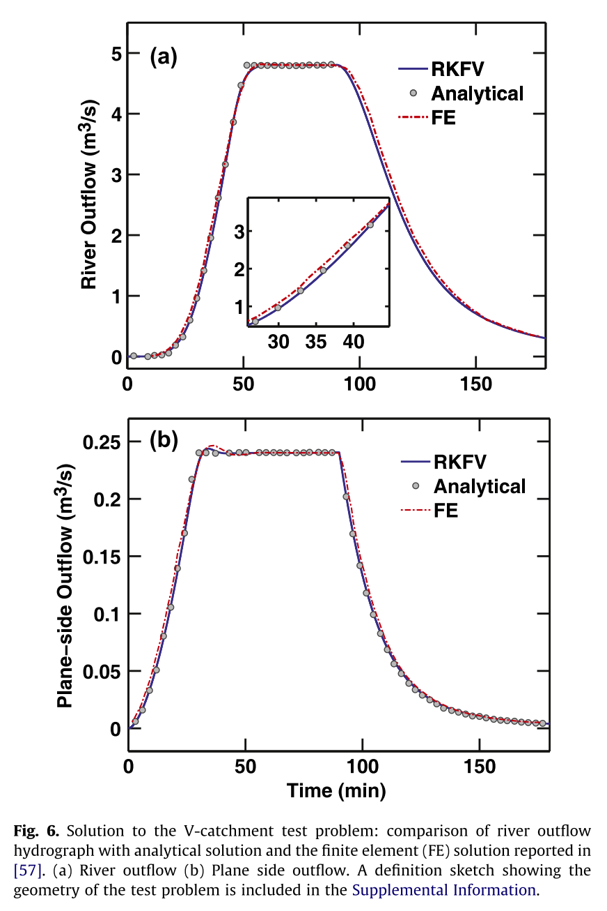
Shen (2010) results
经过分析我们发现Shen等(2010)的坡面流量存疑。解释如下：基于质量守恒和连续性定律，总输入（降雨）必须等于总的输出（坡面净流量或者河道出流量），而Shen等(2010)的结果中坡面流量仅为河道流量和降雨的20分之一。这现象可能是作者绘图过程中的失误导致；因此我们的实验中数字化了Shen等(2010)的结果，但是将坡面流量放大到20倍——即满足质量守恒的量级，然后对比实验。
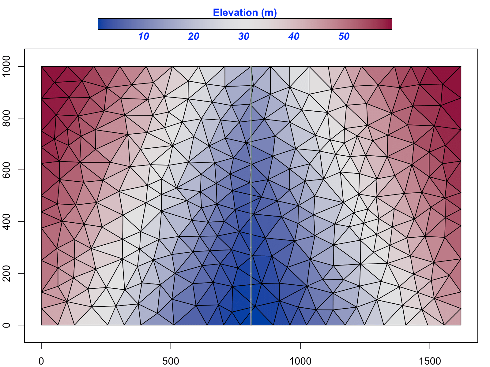
SHUD triangular model domain in V-Catchment
使用SHUD对VC进行模拟，结果如下图。坡面径流和河道出流量都满足质量守恒定律和连续性定理，也能很好验证对于Shen等(2010)结果的推测。
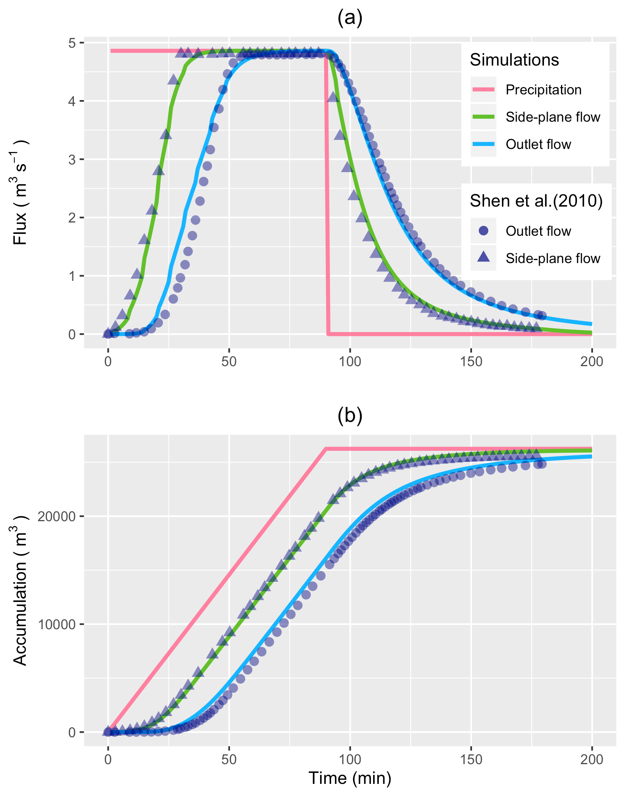
Comparizon of SHUD modeling results versus Shen (2010).
6.2 Vauclin水槽箱试验
本案例数据和源码获取地址： Github: https://github.com/Model-Intercomparison-Datasets/Vauclin1979.
Vauclin试验(Vauclin, Khanji, and Vachaud 1979) is designed to assess groundwater table change and soil moisture in the unsaturated layer under precipitation or irrigation. The experiment was conducted in a sandbox with dimension \(3\) m long \(\times 2\) m deep \(\times 0.05\) m wide (see Fig. ). The box was filled with uniform sand particles with measured hydraulic parameters: the saturated hydraulic conductivity was \(35\) cm/hr and porosity was \(0.33\) m\(^3\)/m\(^3\). The left and bottom of the sandbox were impervious layers, and the top and the right side were open. A hydraulic head was set constant at \(0.65 m\). Constant irrigation (\(1.48\) cm/hr) was applied over the first \(50\) cm of the top-left of the sandbox while the rest of the top was covered to avoid water loss via evaporation.
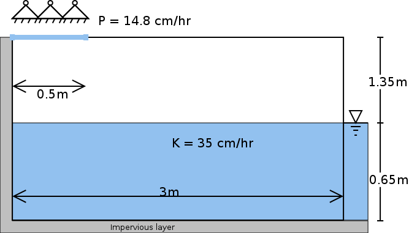
Experiment set-up in Vauclin (1979)
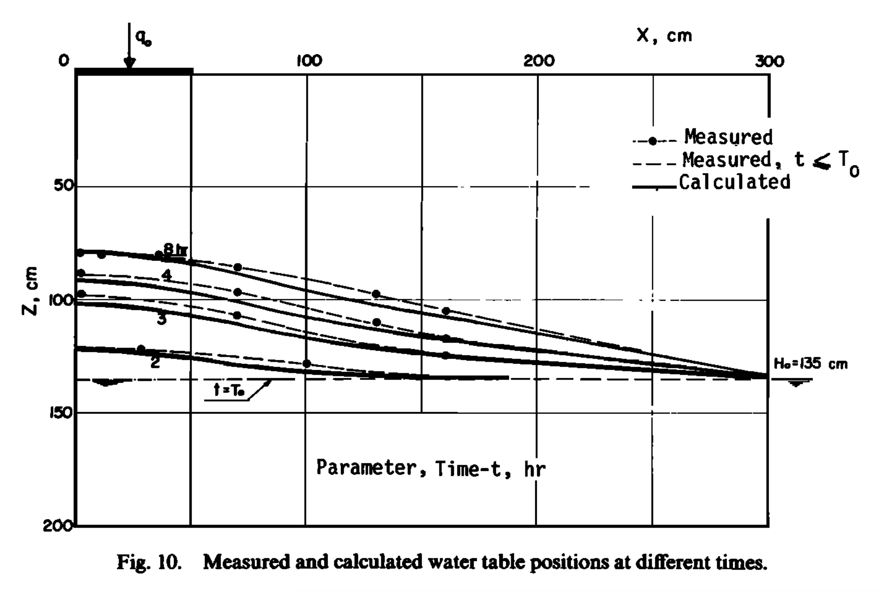
Groundwater measurement and 2-D numeric simulation in Vauclin (1979)
The experiment’s initial condition is an equilibrium water table under constant hydraulic head from the right side. That is, the saturated water table across the sandbox was kept stable at \(0.65\) m. When the groundwater table reached equilibrium, irrigation was initiated at \(t = 0\). The groundwater table was then measured at 2, 4, 6, and 8 hours at several locations along the length of the box.
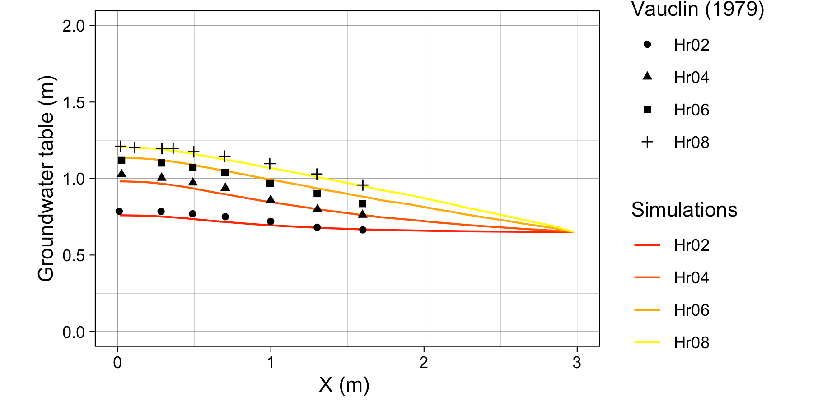
Simulation results from SHUD model versus Vauclin (1979) measurement
also use 2-D (vertical and horizontal) numeric model to simulate the soil moisture and groundwater table. The maximum bias between measurement and simulation was $5.2 cm $, according to the value of digitalized in .
Besides the parameters specified in , additional information is needed by the SHUD, including the \(\alpha\) and \(\beta\) in the van Genutchen equation and water content (\(\theta _s\)). Therefore, we use a calibration tool to estimate the representative values of these parameters. The use of calibration in this simulation is reasonable because the model – inevitably – simplifies the real hydraulic processes. The calibration thus nudges the parameters to values that approach or fit the natural processes. The calibrated values are \(\theta _s = 0.32 m^3/m^3\), \(\alpha = 6.0\) and \(\beta = 6.0\). Like the simulated results in and , a mismatch exists between the simulations and measurements.
This mismatch may be due to (1) the aquifer description of unsaturated and saturated layers limiting the capability to simulate infiltration and recharge in the unsaturated zone, or (2) the horizontal unsaturated flow assumptions no longer hold at the relatively microscopic scales of this experiment.
The SHUD simulated the groundwater table at all four measurement points (see Fig. (b). The maximum bias between simulation and Vauclin’s observations is $ 5.5cm$, with \(R^2\) = \(0.99\), that is comparable to the bias \(5.2 cm\) of numerical simulation in . When the calibration takes more soil parameters into account, the bias in simulation decreases to \(3 cm\). Certainly, the simplifications employed by SHUD for the unsaturated and saturated zone benefits the computation efficiency while limiting the applicability of the model for micro-scale problems.
The simulations, compared against Vauclin’s experiment, validate the algorithm for infiltration, recharge, and lateral groundwater flow. More reliable vertical flow within unsaturated layer requires multiple layers, which is planned in next version of SHUD.
6.3 美国加州Cache河流域
本案例的源码获取地址： Github: https://github.com/Model-Intercomparison-Datasets/Cache-Creek. 数据非常大，如果需要原始数据，请联系作者 Lele Shu
6.3.1 Cache Creek Watershed
CCW是北萨克拉门托河上游的一个支流，面积196.4平方公里（下图），海拔高程450米至1800米，平均坡度38% $ L/L $（陡峭地形是对数值方法水文模型的挑战）。
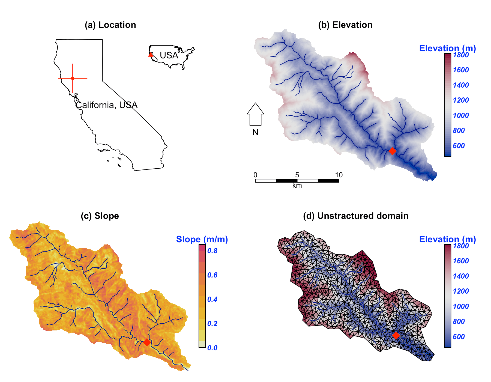
Location and data for Cache Creek Watershed
根据2000-2017年间，NLDAS-2数据，流域内平均气温12.8度，年降雨量817毫米，然而降雨年内、年际分布不均，属于典型地中海气候——降雨集中在冬天、夏天温度高且 干旱无雨。
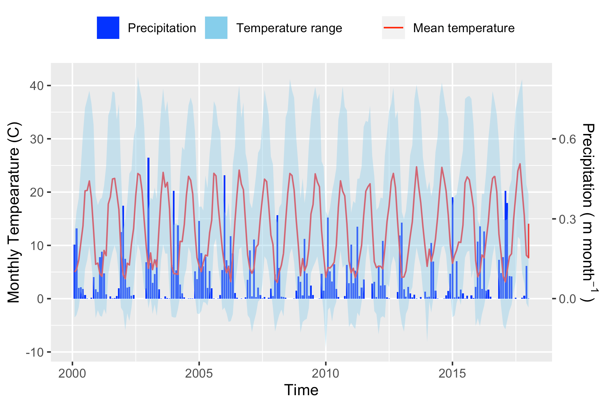
Precipitation and temperature
6.3.2 SHUD simulation and calibration
Our simulation in CCW covers the period from 2000 to 2007. Because of the Mediterranean climate in this region, the simulation starts in summer to ensure adequate time before the October start to the water year. In our experiment, the first year (2000-06-01 to 2001-06-30) is the spin-up period, the following two years (2001-07-01 to 2003-06-30 ) are the calibration period, and the period from 2003-07-01 to 2007-07-01 is for validation.
The unstructured domain of the CCW (Fig. (d)) is built with rSHUD, a R package on GitHub (rSHUD). The number of triangular cells is 1147, with a mean area of $ 0.17 km^2$. The total length of the river network is \(126.5 km\) and consists of 103 river reaches and in which the highest order of stream is 4. With a calibrated parameter set, the SHUD model tooks 5 hours to simulate 17 years in the CCW, with a non-parallel configuration (OpenMP is disabled on Mac Pro 2013 Xeon 2.7GHz, 32GB RAM).
6.3.3 Results
Figure reveals the comparison of simulated discharge against the observed discharge at the gage station of USGS 11451100. The calibration procedure exploits the Covariance Matrix Adaptation – Evolution Strategy (CMA-ES) to calibrate automatically . The calibration program assigns 72 children in each generation and keeps the best child as the seed for next-generation, with limited perturbations. The perturbation for the next generation is generated from the covariance matrix of the previous generation. After 23 generations, the calibration tool identifies a locally optimal parameter set.
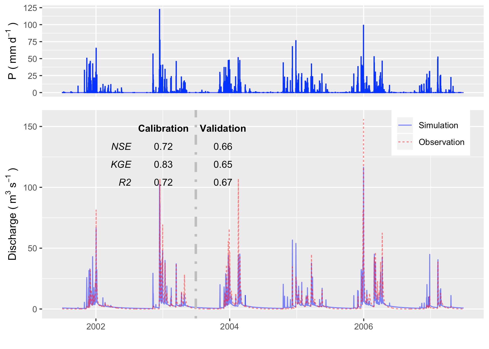
The hydrograph in calibration and validation period
We use the groundwater distribution (Fig. ) to demonstrate the spatial distribution of hydroligcal metrics calculated from the SHUD model.
Figure illustrates the annual mean groundwater table in the validation period. Because the model fixes a \(30 m\) aquifer, the results represent the groundwater within this aquifer only. The groundwater table and elevation along the green line on the upper map are extracted and plotted in the bottom figure. The gray ribbon is the \(30 m\) aquifer, and the blue line is the location where groundwater storage is larger than zero. The green polygons with the right axis are the groundwater storage along the cross-section. The groundwater follows the terrain, with groundwater accumulated in the valley, or along relatively flat plains. In the CCW, the groundwater is very deep or does not stay on the steep slope.
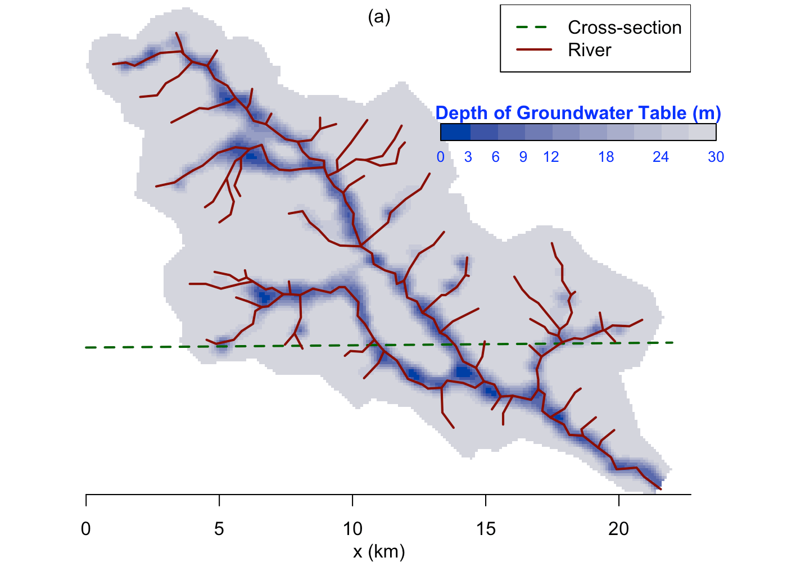
Groundwater spatial distribution map
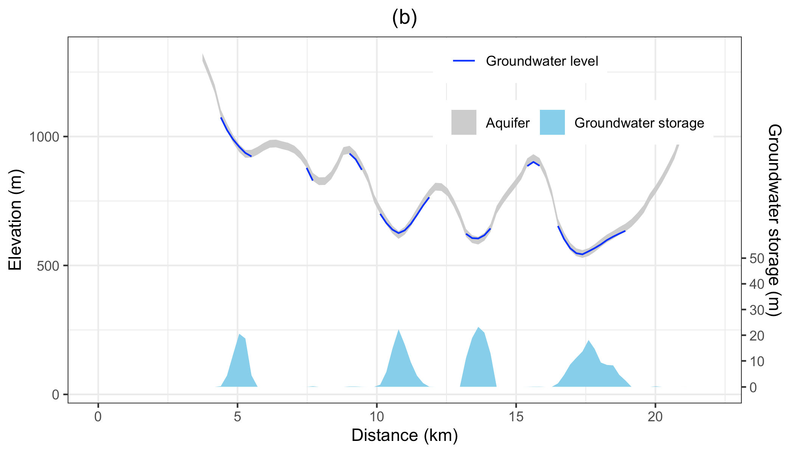
The groundwater condition along the cross-section line
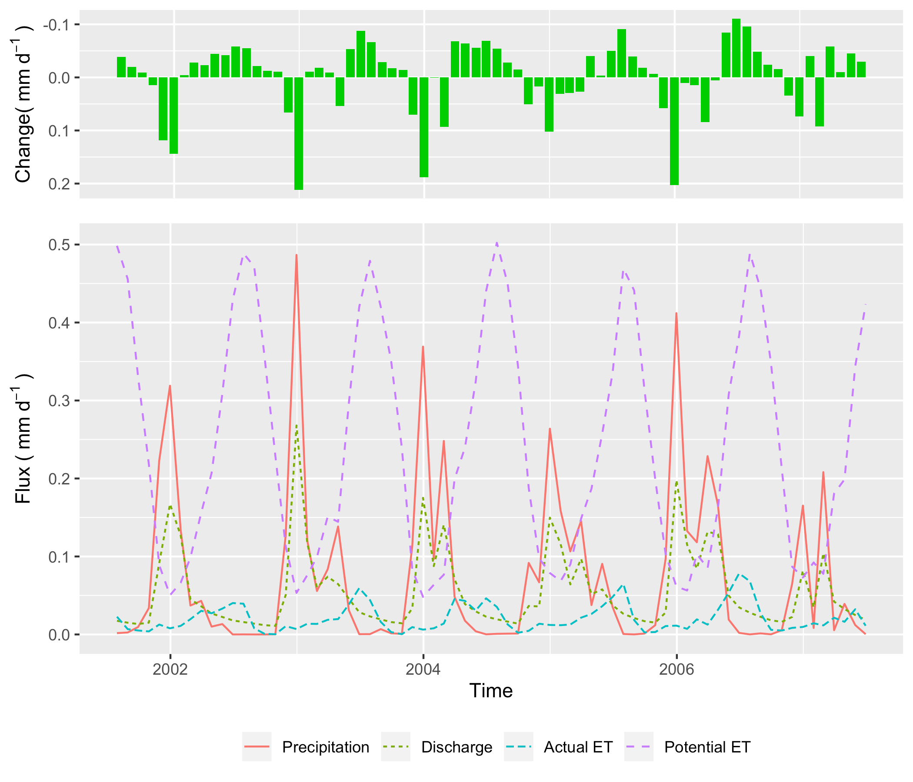
Water balance in the simulation period